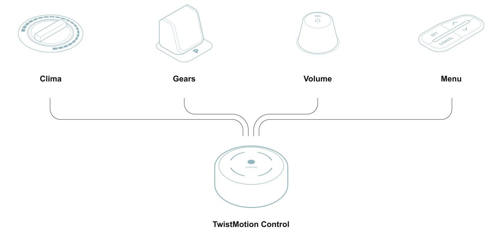

The TwistMotion Control is designed to support natural movements with as little patterns as possible for both making it organically simple and easy to manufacture
Multi-Functional. Still physical
The TwistMotion is designed to support natural movements and support as little patterns as possible for both making it organically simple and easy to manufacture

Controling the UI
The Hoomac’s DriveCore UI is design to be controlled by just 2 possible patterns that organically utilize MotionCore’s natural movements